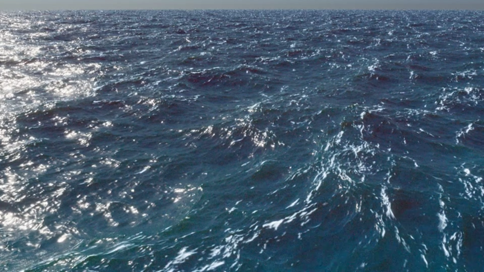

BOSS（Bifrost 海洋模拟系统）节点可以使用泡沫模拟海浪。可以创建风吹水面产生的随时间和距离而变化的光谱波浪，并将它们与由碰撞对象引起的尾迹和涟漪的动态波浪相结合。结果与 Bifrost 流体插件中 BOSS 的结果类似，但图表更加灵活且可自定义。

要开始在图表中使用 BOSS，请炸开 basic_dynamic_wave_graph 节点并对其进行修改以满足您的需求。“Bifrost 浏览器”(Bifrost Browser)中还提供了一些样例图表。
basic_dynamic_wave_graph